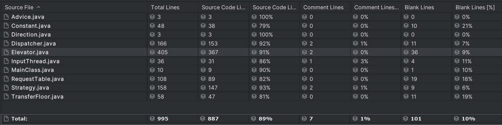

BUAA_OO_Unit2
BUAA_OO_Unit2第二单元总结
一、第一次作业
前言
本次作业完成没有耗费多少时间，但由于对多线程的锁的了解不够深刻，将近花了两天时间来debug，中测也是交了五六次才通过。相比第一单元的作业，第二单元作业在代码复杂度，或者说代码量上存在明显下降，但是理解难度却有了更大的提升，以及由于加入了时间戳的原因，对于某些数据需要耗费大量时间在等待结果上。
UML图架构
本次作业中实现了三个线程类：InputThread（输入线程），Dispather（调度线程），Elevator（电梯线程）
此外，RequestTable需求表类作为共享对象，所以内部方法全部加上synchronized关键字修饰，Strategy作为Elvator的附属类位电梯提供建议（按照作业提示，虽然本人觉得有点多余，但是确实代码理解起来简单）。
作业核心思路是Inputread读取到请求就加入到请求表中，接下来再由调度器将其分配加入各个电梯的分请求表中，当输入线程读取到EOF时电梯线程结束并将调度器Over标志设为true，当调度器的请求表为空且Over表示为true时调度器进程结束并将电梯进程Over标志设为true，对于某个电梯如果其分请求表为空且Over标志位为true时则电梯进程结束。
LOOK算法：电梯接收开门、沿着原方向运行一层、结束、等待、调转五种建议首先判断是否需要开门，如果需要开门则电梯执行开关门
然后，如果电梯内部还有人则电梯沿着原方向运行一层，反之，就判断请求表是否为空，如果请求表为空，如果请求表同时Over标志为true则该电梯进程结束，否则该电梯等待请求表填入，如果请求表不为空，则判断是否需要调整运行方向，不需要调整方向则沿着原方向运行一层。
分配关系如下
作业体会
锁的理解
由于本次作业对锁理解不够深入，于是我再次学习了相关知识：
java中有方法锁、对象锁、类锁、静态锁，核心都是为了达到访问的有序。
对象锁：JVM 在创建对象的时候，默认会给每个对象一把唯一的对象锁，一把钥匙
类锁：每一个类都是一个对象，每个对象都拥有一个对象锁。
静态锁： 在静态方法前面加上synchronized方法表示锁定此类，当多个线程调用这个类中的静态方法时会阻塞。
实例锁： 在实例方法前面加上synchronized方法表示锁定类的单个实例，当多个线程调用一个类申明的同一个实例的实例方法是会阻塞。
当多个线程用一个对象锁，各个线程可以达到同步的作用，如果每个线程都用自己的对象锁，那么synchronized就失去了同步的作用，如下代码将不起作用：
1 | |
静态锁是针对静态方法而言，当一个静态方法中有synchronized关键字时，默认的是使用当前类字节码对象作为锁。
最后理解好哪些调用会互斥：
1、调用同一个对象中非静态同步方法的线程是互斥的。如果是不同对象，则每个线程有自己的对象的锁，线程间彼此互不干预。
2、调用同一个类中的静态同步方法的线程将是互斥的，它们都是锁定在相同的Class对象上。
3、静态同步方法和非静态同步方法将永远不是互斥的，因为静态方法锁定在Class对象上，非静态方法锁定在该类的对象上。
4、对于同步代码块，要看清楚什么对象已经用于锁定。在同一个对象上进行同步的线程将是互斥的，在不同对象上锁定的线程将永远不会互斥。
debug过程
花费最长时间在始终有一个进程无法唤醒，最后发现，最初架构时将电梯Over和调度器Over标志一起设置为true，这就导致了电梯进程结束了而调度器进程还没结束进而导致最后调度器进程无法结束。
数据生成
还是采用随机数生成的方法，并采用官方包进行输入输出，然后对输出结果进行如下统计分析：
- 是否有人没上电梯
- 是否有人没下电梯
- 乘客乘坐电梯编号是否正确
互测
本次互测通过数据生成hack成功一位TLE的同学。
和一条hack所有人的数据（当然呢，不合法！！！愚人节图一乐，后续被助教撤回）
二、第二次作业
前言
本次作用增加了维修指令，在维修时要将电梯内部人员“赶”下来，同时撤回已分配请求，同时需要输出receive指令，从而要求我们具有一定的分配策略（但是，由于本人技艺不足，没有选择影子电梯，而选择了随机数大法），总的来说本次作业增加代码较少，完成起来较为顺利（可能是假期的原因）。
UML图架构
本次作业，由于采用的调度方法（随机数法）较为简单，所以相比上次只增加了一个Constant常数类用于维护电梯各项参数，暂时只维护了一些简单参数，从而实现了电梯内部无任何常数，代码的抽象层次更高。
作业体会
本次作业，由于电梯开始reset时，如果内部还存在乘客则将乘客“赶下来”（将targetMap中的乘客重新撤回到等已分配状态的RequestTable），然后已经分配的需求撤回到未分配队列，并清空该电梯的请求表。于是就产生了以下情况：
即待分配队列有两个输入来源：输入线程和每个电梯，这样，如何让线程正确结束成了我亟待解决的问题。
1 | |
当输入结束时，将输入结束标志变为true，当任务全部完成时（输入结束，且待分配队列和六个已分配队列都为空且不处于reset状态），则将总表的结束标志变为true，当总表的输入标志为true时，则把所有电梯表标为结束，调度器线程结束。
Debug过程
ConcurrentModifyException问题的解决
getPersonRequestMap()方法调用时可能出现ConcurrentModifyException问题（由于上图所展示的循环导致），解决方法：由于getPersonRequestMap()加锁，所以可以通过，将所有涉及元素增减的都通过调用getPersonRequestMap()方法
互测被刀惨了，由于本人架构采用不给在维修中的电梯分配请求，于是下列方式构造的数据就把我狠狠刀住
- 首先将某个电梯速度设为最慢，容量设为最少
- 在49.0s作业将其他五部电梯维修，同一时刻加入64条由11层到1层的请求，这样请求就全部加给了同一部电梯了，达到卡tle的作用
解决方式：电梯分配数量加入考虑因素，当然，这不是一个好的解决方案，于是第三次作业中我换了一种方式
三、第三次作业
前言
本次的有丝分裂电梯着实令人头疼，想了很多办法依旧没能达到很好的架构，只能不断在原来的代码的基础上一点一点叠，最后真的惨不忍睹，bug也是de完一个又来一个，到周六才大概达到一个自己满意的测试结果
UML图架构
本次总体架构相比上次无较大的改动，主要多了一个TranferFloor作为上下电梯的共同对象。代码增长主要体现在Elevator电梯类和Strategy策略类
最开始计划将双轿厢电梯作为一个新的类处理，但一直没想好处理方式加上重构面积较大，由于题目中规定了第一类reset后不会出现第二类reset，所以我，最终采取了在电梯类中增加两个Elevator类upElevator和downElevator，接收到第二类reset时，完成reset后启动改电梯的这两个线程并将其加入线程池中。
作业体会
针对上次出现的保持一个电梯不在reset，随后同时加入大量请求出现的超时bug，在bug修复中我采用的是限制单个电梯的加入到请求的数量，但是感觉还是不是特别靠谱，于是我采取调度器直接分配的方式，如果处于reset状态，就加入wait2Recive队列，reset结束后再将请求加入RequestTable中。
Debug
先谈谈自己debug中遇到的经典问题：
NullPointerException
由于双轿厢电梯和普通电梯的策略类以及各种行为的方法相同，所以一不小心涉及getUpElevator之类的方法时就会涉及NullPointerException，当然这一类的bug相对来说比较容易发现
防止电梯对撞问题
如何防止电梯出现撞梯现象，是本次作业的核心，也是比较难处理的部分，我采用的是抢共享类中的方法锁和标志位的方式
在决策类中，如果发现当前楼层进行move操作后到达换乘楼层，且当前换乘楼层被占用，就执行stop操作（sleep一小段时间）
当上下两电梯同时要到达换乘楼层时（下方电梯在换乘楼层的下一层且方向向上，上方电梯在换乘楼层的上一层且方向向下），就需要采用抢锁的方式了，具体如下的共享类Transferfloor的try2Move方法，当某个线程调用该方法时，将被占用位设为true，另一线程需要等另一线程的该方法结束，再调用该方法的时候就只能等待了，直到换乘楼层不再被占用才被唤醒。
1
2
3
4
5
6
7
8
9
10
11public synchronized void try2Move() {
while (isFull) {
try {
wait();
} catch (InterruptedException e) {
e.printStackTrace();
}
}
setFull(true);
notifyAll();
}
等待换乘楼层不被占用的线程被唤醒后立即就会arrive，所以可能会出现虽然时间戳相同，但该线程的输出可能会先输出，于是我被迫采取休息1ms的方式解决这个问题
1
2
3
4
5
6
7
8
9
10
11if (isDoubleCar) {
if (currentFloor == (transferFloor.getFloor() - 1) && direction.equals(Direction.UP)) {
transferFloor.try2Move();
rest(1);
}
if (currentFloor == (transferFloor.getFloor() + 1)
&& direction.equals(Direction.DOWN)) {
transferFloor.try2Move();
rest(1);
}
}
总体总结
前言以及相关图
由于本人对影子电梯的理解不够，选择的是实现起来极其简单收益也尚可的随机数法，所以代码规模相比使用影子电梯的同学要少，但是最让自己都无法接受的就是电梯类中参杂了太多的因素——既有电梯自身的属性，又有作为线程所包括的各种运行方法，还实现了第二类reset后的线程相关的线程启动，包含了大量的if，着实不是一个好的架构。

总体代码时序图：
线程安全
从第一次作业到第三次作业，每次花费时间最多的就是de线程安全的bug，直到最终版本，代码依旧存在极小概率的bug
其中下面这个bug是我感悟最深。
我们知道，在我们采用增强for循环遍历时若删除对象是线程不安全的，于是我们引进了迭代器删除的方法，但是在多线程中，对于共享对象即使采用迭代器删除仍然需要采用对对象加锁的方式保证线程安全，如下所示：
1 | |
而不加入对象锁时，运行结果可能正确，而且输入可能需要多次运行才能复现bug。
总的来说，单纯的方法锁和对象锁不足以满足后续更加复杂的情况，于是我们也又有了互斥锁（一次最多只能有一个线程持有的锁）、读写锁，可重入锁（可重复可递归调用的锁，在内层仍然可以使用，并且不发生死锁（前提得是同一个对象或者class））与不可重入锁……
层次化设计
线程设计
- 输入线程
- 调度线程
- 轿厢线程
总体来说，经过总结思考，把轿厢而不是电梯作为线程更加可靠，也更加能够适应第三次作业，我的架构仅支持第二类reset后无任何reset，但是倘若可以来回reset，将轿厢作为线程，并将单轿厢电梯和双轿厢电梯作为两个类保证其自身特性可以更适应后续迭代（倘若有的话）
共享类设计
- 请求表
- 换乘楼层
将请求表作为共享类毫无争议，第三次作业中将换乘楼层作为双轿厢的共享类着实方便，可以通过抢锁十分方便的实现避免撞梯。
枚举类
- 方向
- 电梯策略
将方向作为枚举是我考虑到可能会出现上下左右乱移动设计的（可惜没有），虽然便于理解代码，但是远不如+-1代表方向来的方便。电梯策略作为枚举十分有必要，处理不同策略，用英文枚举着实提高可阅读性。
经过一个单元的学习，让我对多线程知识的了解增进了不少，从简单的方法锁对象锁的使用到抢锁实现交互的实现，对并行程序的书写不仅让我的OO水平狠狠提高（虽然预判的迭代都失败了，但是希望下届可以有hhh），对OS的帮助也是多多。